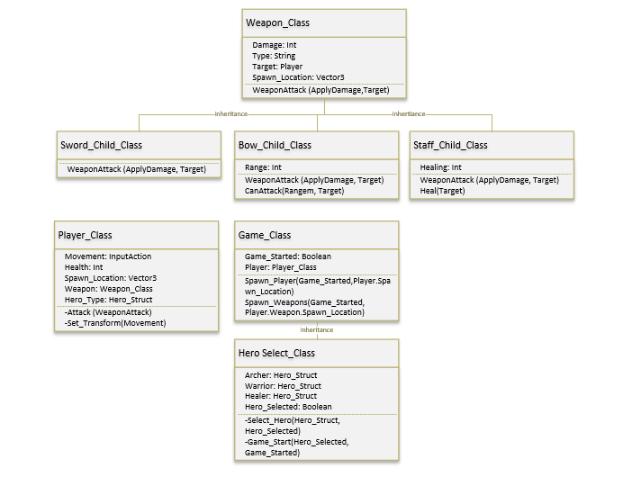
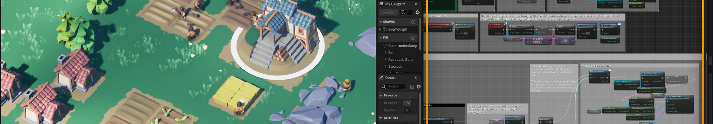

September 30, 2025Sep 30 comment_1067167 What Are Solid Principles Solid principles are five design guidelines for developers to write more maintainable, understandable ad flexible code. S - Single Responsibility Each class should be responsible for one section of the system. This makes classes more individual and self-reliant, they are more decoupled so changes are easier. O - Open-Closed Principle Software components (like functions, classes etc...) should be open for extension, but closed for modification. Essentially, old code should be treated as read-only so any new functionality is always an extension, as opposed to a full rewrite of the entire system. This saves times and makes collaboration easier. L - Liskov Substitution Principle Children should be substitutable for their base types without changing what the program does/outputs. If a child class is used in a situation where a parent is expected, the program should still function correctly. I- Interface Segregation Principle Interfaces should be small and specific so there are no disused methods being implemented. Classes should only know about interfaces related to them to follow the Single Responsibility principle. D - Dependency Inversion Principle When a subclass is dependant on a superior class, any changes to the subclass should not affect the superior. Interfaces should be used instead of direct calls between units of code. These rulesets are also good for abstraction and decoupling which also follows the Single Responsibility principle. So essentially high level policy setting modules should not depend on low level detailed implementation modules. For example, a notification service shouldn't depend on an email sender, instead they should both use the same interface. Link to comment https://daf.staffs.ac.uk/topic/79347-astles-jake-a013867o/ Report
October 2, 2025Oct 2 Author comment_1069214 UML Diagram Unified Modelling Language (or UML) breaks down complex systems in a visual manner for simplification and ease of understanding across the entire team. This means the backend Software Engineers and other programmers can communicate the code architecture and system workflow with designers easier, without them having to understand all of the complicated stuff. UML diagrams are more technical and precise than flowcharts. They follow a specific set of standards and rules and have different variants like a structural diagram (for static components of a system) and behavioural diagrams (what is happening in the system). One type of structural diagram would be a class diagram. This would show the attributes and operations of a class, along with its relationships with other objects.  Why You Should Avoid Running Things On Tick You should avoid running things on tick because you can usually find another way like using events instead. It is incredibly inefficient to poll for something on every frame and depending on the hardware that the game is running on, the logic will be run much faster or slower which could affect gameplay and performance. For instance, trying to run some older games at 60 or 120 FPS will make it run in slow motion because they had physics which was designed and calculated on tick which meant that anything above the target fps ran wrong. Link to comment https://daf.staffs.ac.uk/topic/79347-astles-jake-a013867o/#findComment-1069214 Report
October 17, 2025Oct 17 Author comment_1082795 Unreal Engine Gameplay Framework How Does Unreal’s Gameplay Framework Work? The Gameplay Framework in Unreal Engine 5 is essentially the base set of classes that give you the foundation for coordinating the behaviour of players, AI, worlds, and game states. It abstracts away much of the boilerplate that would otherwise exist in a custom engine. The framework has been improved and optimised with every iteration of the engine. Interestingly, some code from the oldest version of Unreal is still shipped with the engine and is still used in some of these core areas; however, most is now disused. At its core, the framework manages the network and multiplayer, actors, controls and the level instances and data held between levels. This is done using classes which communicate during runtime, like the Gamemode and AGameState, especially through events like BeginPlay, Tick, and EndPlay.  Core concept: The UWorld object contains and manages all gameplay objects. Each UWorld is associated with a UGameInstance, which persists between levels. Gameplay happens inside a Level, which contains AActors. Actors define behaviour through Components and inheritance Public Opinion/Critiques Some public opinion on Unreal’s framework has merit; however, I think a large majority are uncultured and use the framework as a scapegoat for lazy studios who didn't have the time for optimisation. Common critiques: Complex inheritance - deep class hierarchies can intimidate new developers. Tick performance costs - poorly optimized Tick() functions can cause frame bottlenecks. Multiplayer/Networking complexity - while powerful, Unreal’s networking model can be difficult to master. Tight coupling to Editor workflows — engine assumptions can make “headless” builds or pure-data games cumbersome. Counterpoints: These aren’t necessarily flaws; they reflect the framework’s general-purpose nature. With disciplined C++ design (e.g. components, subsystems, good practice and event-driven architecture), many of these issues are mitigated. Study: Metal Gear Solid Delta: Snake Eater Pros Features like Nanite and Lumen are readily available and easy to integrate into legacy code and existing workflows. The framework’s decoupled world systems meant legacy data (like enemy patrol routes made in the Fox Engine) could be converted into AActors or UDataAssets with relative ease. Cons While Unreal Engine 5 made it look good, the increased performance overhead exposed some weaknesses. The use of Lumen for real-time lighting and Nanite geometry added detail but strained performance, especially in complex jungle environments with dense foliage and dynamic shadows. Many players noted inconsistent frame rates and texture streaming issues, suggesting that the team may have pushed UE5’s rendering features beyond what current hardware could comfortably sustain. Many people also noted that the AI detection and player perception in stealth were much more janky. This was a large issue considering it's traditionally a core MGS mechanic. This is likely because the built-in perception components didn’t fully capture the nuanced sound and sight logic of the original Fox Engine implementation. The result is a visually impressive but uneven experience where even the best players were confused as to why they were being detected unnecessarily. In conclusion, I think that had they focused less on implementing ray tracing, fancy graphics and new AI systems and more on optimising things using Nanite and sticking to what worked well in the Fox Engine, the game would've been a much larger success on release as it would've been polished and juicy, as opposed to a unsatisfying and visual mess that even FSR can't make runnable. Edited October 17, 2025Oct 17 by Jake Astles Imrpoved layout Link to comment https://daf.staffs.ac.uk/topic/79347-astles-jake-a013867o/#findComment-1082795 Report
October 19, 2025Oct 19 Author comment_1084297 Designer Friendly Systems What Makes a Good Designer-Friendly System? Data-driven first — easy to understand decoupled variables and tables like DataAssets (for individual items), DataTables (for multiple items), Curves (for changes over time) This is good because the designer could use a graph to have the damage of enemies scale gradually depending on the level, as opposed to the programmer just hardcoding a function like: "damage = level * 10". Additionally, a datatable could hold the stats for an entire forest, as opposed to every single tree holding its own values. KISS (keep it simple, stupid) — a limited set of exposed values that map to designer concepts (e.g., damage, cooldown, radius). Less is more; overwhelming designers with unnecessary values is useless and wastes time. Instead, giving them the bare minimum makes everyone's life easier. Safe values and validation — ranges, clamped values, Editor validation and warnings. Ensuring values are kept within a safe range is key to stopping a designer from accidentally breaking the system. If an invalid value is input, a warning or error should be provided. Blueprint surface with a C++ core — heavy-lift systems in C++ with a Blueprint wrapper for designers. Keeping some systems in Blueprints before optimising and eventually moving them into C++ is good because it means the designers can help shape the original code before it is optimised. If some systems are subject to constant change, like animation or sound/particle effects, then they should be left in Blueprint permanently, just so the VFX Artists and Sound Designers have an easier time implementing and updating systems. Instant feedback & logs - stat displays, in-editor charts or UE log. These are all useful for designers because they won't necessarily have access to the same debugging suite that programmers have (no breakpoints or variables they can watch, etc). If a problem occurs in some low-level code, outside of the blueprints system, the designer would be able to fix the issue far faster if there is a verbose log of what's happening at each stage. Perhaps they changed the amount of damage an enemy does or gave them too much health, and this caused an external system to crash due to a lack of input validation. Updated, documented data — human-friendly names, tooltips, examples and migration rules. In my opinion, this principle would be more useful between programmers than from a programmer to a designer. However, if a designer ever did need to reference the code for whatever reason, perhaps to understand a function, or to see how they could expand a system, having good documentation and variable names is an incredibly useful tool for easy collaboration. This would be even more important in blueprints since it is an area the designer is more likely to interact with. Call Of Duty: Black Ops 3 - Potential Designer-Friendly Structure Zombie Spawning and Difficulty: All the rules for each round could be stored in a one Data Table. Then a Round Manager script would be used to reference the table. For example, when Round 5 starts, the script would check the table when deciding how many zombies to spawn and how much health they should have/damage they should do, etc. Designers can rebalance the entire game by just editing this spreadsheet, with no code changes needed. This would be good for making different maps with different amounts of zombies, or for making different difficulty levels with harder zombies. Pack-a-Punch and weapon modifications: One "blank" C++ weapon script could be used that handles the logic of firing and reloading, but has no stats. All the stats for every gun (damage, clip size, etc) are stored in separate Data Assets. When you buy a gun, the blank C++ weapon is given the correct Data Asset to read from. The Pack-a-Punch machine simply tells the weapon to swap its current Data Asset for its "Upgraded" Data Asset, which instantly changes its stats and appearance. This also means that guns could have a modifiers section that designers could extend or change depending on DLC or equipped perks. For example, if the player had speed cola, then the reload speed could be changed per weapon. This would be especially useful for balancing, since individual weapons' values and states could be tweaked. Designer Influence Designers should have full control over everything that defines the feel and balance of the game. This includes: Numbers: All the stats. Health, damage, speed, jump height, cost, cooldown times, XP rewards. Content: Every asset, such as 3D models, sound effects and particle effects, etcetera. Extension: A designer should be able to create a new "Poison Bullet" by taking the base bullet and extending it by adding a pre-built "Poison Effect" to its Data Asset, independent of a programmer. The "Core Logic & Performance" Layer: Designers should have 0% control over the core systems that make the game run, the "C++" layer. This includes: Algorithms: The code for how damage is calculated, how AI pathfinding, or physics calculations. Performance: Anything that affects memory or speed. Designers shouldn't be able to do something that crashes the game or makes the frame rate drop. If they can, then the programmer is likely at fault for exposing the wrong things to them. Networking & Security: In a multiplayer game, this is critical. A designer can't change code that might let a player cheat or crash the server. Where Do You Draw the Line? The line is drawn between "What it is" (Designer) and "How it works" (Programmer). In COD Zombies: Designer's Job: Editing the Data Table to say "Round 5 has 24 zombies with 500 health". Programmer's Job: Writing the C++ "Round Manager" script that knows how to open that Data Table, read the correct row, and physically spawn the zombies. Without this boundary, designers would be inefficient and unsafe; they would constantly be at odds with the rest of the team due to unnecessary overlap. With it, programmers can focus on building stable, high-performance systems. Edited October 19, 2025Oct 19 by Jake Astles Added images and the final section Link to comment https://daf.staffs.ac.uk/topic/79347-astles-jake-a013867o/#findComment-1084297 Report
October 19, 2025Oct 19 Author comment_1084639 Project Focus Introduction I'm thinking of doing a 3rd-Person action/adventure/exploration game. The main features are player movement, combat, and a resource-farming, perk upgrade loop. Core Gameplay Elements: Player: Movement and combat Spell Mechanic: The spell uses a "charge" (up to 10 seconds of use) before a cooldown. Dual Modes: Red Fire (Damage): A standard projectile or stream for combat. Blue Fire (Recoil): A propulsor that does no damage but has a lot of recoil, allowing the player to "fly" between floating islands and do parkour off enemies and walls. Core Loop: Explore: Use Blue Fire to reach new islands. Conquer: Defeat all enemies on an island using Red Fire to "activate" it. Consolidate: Activating an island moves it closer to the hub island and turns it into a "farm" where enemies respawn on a timer. Upgrade: Farmed loot is used to upgrade the fire (cooldown, damage, recoil strength) and the islands themselves (faster respawns, better and more often loot). Perfect Version: The ideal project is an archipelago of islands with many different enemy types and some environmental puzzles that mean you have to use the Blue Fire. The upgrade system would be strategic, meaning you could focus on a class like movement over damage. Other Titles Movement: The Blue Fire recoil is directly inspired by "rocket jumping" from games like Team Fortress 2, and the aerial dexterity of players in Titanfall 2. The goal is a fun and juicy movement system. World Structure: The "activate and move" island mechanic is similar to the progression in Skyblock in Minecraft servers, where you return to a central hub (the starting island) after adding a new island to give you more space to farm. Loot & Upgrade Loop: The farming and upgrading loop is a classic feature of an ARPG, like in Diablo. You clear content to get loot that makes you more efficient at clearing content and getting more loot. Exclusion For this prototype, I am excluding adding in different spell types, since they would involve more audio, VFX and separate upgrade trees and loot types. Another weapon would be the sort of thing you would add in a DLC, as it would result in an entirely different path of content and enemies, potentially even a different movement system, like creating ice paths mid-air. The focus is entirely on making the dual-mode fire spell feel juicy, as it's both the primary weapon movement tool. C++ and Blueprint Separation A good example of how I would separate the C++ and blueprint, whilst ensuring the designer can only see what they need to, would be the Spell Effects Blueprint: The C++ USpellComponent doesn't know what "fire" looks like. It just knows it's "firing in damage mode." When the player fires, the C++ code will spawn a Blueprint class defined by the designer. BP_RedFire: This Blueprint handles the particle effects (VFX), sounds (SFX), and the logic for applying damage (e.g., a sphere trace). It gets its damage value from the UDataAsset_SpellStats. BP_BlueFire: This Blueprint spawns a different VFX/SFX and, on its "Tick," gets the BlueFireRecoilStrength from the Data Asset and applies that force to the C++ Player Character. Expected Challenges & Learning Goals The "Game Feel" of Blue Fire: The biggest challenge will be ensuring the Blue Fire has balanced recoil. It needs to be controllable but powerful, allowing for skilled movement without being frustrating. This will require constant iteration, which is why having the "BlueFireRecoilStrength" in a Data Asset is critical. I will also have to be careful with the upgrades to the Blue Fire, as I don't want to send the player to outer space if they use it wrong; this could easily become a collision issue. State Management: Tracking dozens of islands, each with its own state and unique respawn timer, could get complicated. I'll need to design the C++ "AIslandManager" very carefully to be robust and efficient. I was also thinking of adding a cutscene for when the island moves over to the hub, so I might have to learn how to make dynamic cutscenes or use a cutscene manager or something, since many islands will all have different locations and recording individual cutscenes for each one could become a pain. Perhaps, just moving the camera, temporarily preventing the player from moving/firing and having the islands pathfind their way to the hub could be the best method. Link to comment https://daf.staffs.ac.uk/topic/79347-astles-jake-a013867o/#findComment-1084639 Report
November 25, 2025Nov 25 Author comment_1114281 Design Patterns The Factory design pattern is about creating objects without specifying the exact class to simplify the instantiation process. For example, you may have a game manager who wants to spawn a ball. The game manager shouldn't need to know about the class of the ball it wants to spawn; instead, it should be able to reference a public ball spawner with ball types stored as an Enum. This ball spawner may even inherit from a more general parent class or interface which defines the actual spawning logic; the ball spawner may just override some of these functions with more specific values like the prefab, type to spawn, spawn location, etc. This means the game manager can just go BallSpawner.Spawn(BallSpawner.RedBall) and the ball spawner would then spawn the ball using member variables storing the ball prefabs. The specific type of ball spawned could potentially even be checked/validated by checking if it implements a specific interface. The object pooling pattern is most useful for large sets of objects, such as enemies or bullets. This involves initialising a "pool" of objects before they need to be used. This means objects can be activated and moved to the desired location before being deactivated upon use, as opposed to instantiating new objects and destroying them every time they need to be used. This would have a large effect on performance, especially with larger quantities of objects being used quickly (such as bullets). Pre-allocating when the scene is loading, or another situation where a loading screen may be needed, is ideal because it won't interrupt gameplay and give random frame drops when it occurs. If the entire pre-allocated pool is used, a small margin of extra objects can be allocated on the fly, before eventually being deallocated again, after they are disused for a certain period of time. The Singleton pattern is great for manager classes. It is all about ensuring a class has only one instance, and providing global access to that single instance through a static property to limit duplicates. For example, an audio manager would generally be a Singleton because it would only ever need one instance. You wouldn't want three audio managers managing the same group of audio because then things would get confusing and messy. This is good for performance and consistency whilst maintaining behaviour across different scenes. Another example of a Singleton would be a player spawner. This should only ever have one instance, as you wouldn't want two or three player spawners, potentially listening to the same events, like OnDeath, and then trying to spawn the player multiple times. The Command pattern is about using objects to queue tasks. This is good for controlling timing or playback. One example of playback would be being able to undo things. This can be done by using an undo and a redo stack. When a command is executed, it can be pushed onto the undo stack. When the undo command is executed, the stack is then accessed to revert the current command to the one at the top of the stack. Any commands which are undone are popped off the undo stack and pushed onto the redo stack to be used by the redo command in the same way. The State pattern allows you to execute commands based on the state the object is currently in. This can be particularly useful for AI because it can be put into a state machine. A state machine can then determine what state the AI is in by checking basic things like movement. For instance, if the AI isn't moving, it can be put in the Idle state. Another command may be checking if the AI is in the Idle state to see if the AI should start regenerating health. If the AI is at full health, it may go into the combat state, etcetera. This can also be good for player movement, such as rolling and jumping, since you may want to apply custom logic if the player is in the Begin-Roll/End-Roll, Rising, Apex and Falling states. The Observer pattern works like a radio station. One object broadcasts whilst other objects listen. Objects can listen for specific songs (or events). Once the specified event is heard, actions can be performed. For example, a player might broadcast an OnDeath event when they die. Many objects may be listening for this,l ike the HUD (to know if it should be reset), the game manager (to know if the player needs respawning), and the respawn menu handler (to know if the respawn menu needs to be created). The MVP (Model, View, Presenter) pattern is like MVC (Model, View, Controller) in web development,t except it is more decoupled because in MVC, the controller is always directly referencing the vie,w and the model and view are tightly coupled, whereas in MVP the model and view are loosely coupled and only interact through the presenter, usually using interfaces. The view is essentially the same, just for handling button clicks and manipulating the visual elements and their layout. The model holds the logic backend, and the presenter formats the data between the view and the model. The data can go both ways, model to view or view to model; either way, the presenter is used as an intermediary. For instance, if a button is clicked, the View would handle the input before sending that data to the Presenter through an interface. The Presenter then executes any necessary presentation logic before getting the Model to run a function. After the function was executed and the Model's state changes (e.g., player health drops) The MVVM (Model, View, ViewModel) pattern is more advanced again. It uses a ViewModel instead of a Presenter, which is even more advanced, decoupled, and testable. The ViewModel is better than the Presenter because it relies on an event-based system (data binding), which is much better than the Presenter's manual approach of subscribing to Model events and calling View functions. The ViewModel uses this binding system, which means it does need an interface to communicate with the view, as its display properties are publicly exposed and automatically updated without any extra code, which is far more efficient in terms of development time and code maintenance. Crucially, while the View interface is gone, the ViewModel should still use interfaces to communicate with the Model to ensure full testability and adherence to SOLID principles. For ViewModel Testability, you test that the ViewModel's public properties and command logic are correct; you don't need to mock a View interface, which is generally cleaner and simpler. The View still exists for manipulating the UI and handling user input, and the Model still holds the backend data and performs the core game logic. Additionally, the ViewModel still has to perform the same essential formatting and calculation logic (presentation logic) as the Presenter. The Strategy pattern is a design pattern that lets you define a set of behaviours, put each into its own separate class, and make them interchangeable. This lets the client (player) object swap that behaviour at runtime without changing its own code. A player might have a movement strategy which changes depending on the situation they're in. By default, you would use a walk strategy. If you get a power-up, you would switch to the relevant power-up strategy (e.g., Fly. If you're in water, it might switch to a Swim strategy. This is more efficient than writing a giant if/else block inside the Player class, because instead, you can use a strategy interface, which has one method (like move). You then create separate classes like: Walk, Fly, and Swim. Each one implements the main strategy interface. This means the player can have a variable like currentStrategy, which references the main strategy interface. This variable can then be swapped at runtime. For instance, when the player gets a power-up, you can just change what's in that variable, currentStrategy = new Fly(). The Player class doesn't care which strategy it has. In its Update() loop, it just calls currentStrategy.Move(). This is good because it encapsulates each movement type (Walk, Fly). Every implementation is in a unique class, thus decoupling all logic. This also improves the modularity as it splits what would be a giant player class into many smaller interchangeable classes which implement one interface. Lastly, this is also good because it follows the open-closed principle as it is easily extendible; if you wanted to add a dash strategy, you wouldn't have to modify the player file at all, you would just make a new dash class implementing the current movement interface. The flyweight pattern is where similar objects share the same assets. This can be done by using Scriptable Objects in Unity and Data Assets in Unreal Engine. This means that a forest of trees can all reference the same wood material, as opposed to every tree making its own instance of the wood material, which would utilise far more memory. This pattern is especially useful for optimisation and works well when you have lots of similar objects in the world. The dirty flag pattern is great because it is very optimised. It avoids unnecessary computations by tracking an object's state and only updating when "dirty" (the state has changed). If a part of the world isn't in use by the player, it doesn't need to be rendered. However, if the state changes because the player is near enough, then it becomes dirty and can be rendered; however, if the player moves too far away, it becomes clean and is unloaded. Another example would be checking if the player is on the ground whenever they collide with an object, as opposed to checking if the player is on the ground every frame. Solid Principles The single responsibility principle states that each class should be specific and should only be responsible for one section of the system. This makes classes more individual, self-reliant and decoupled, so changes are easier and have less of a "domino effect". This can be followed more easily by giving classes better names. Like, instead of a script called "Game Manager" that only controls the creation and deletion of objects, call it "Existence Manager" or "Spawn Manager". Personally, I prefer existence to spawn, as spawn only implies it manages death, whereas existence is more direct. This would then encourage collaborations to only use the class as specified, as opposed to putting unnecessary extra logic in their like scene loading or async operations, as one may put into a more vague and general "Game Manager". For the open-closed principle, you should make classes open to extension but closed for modification. A good example of this would be that instead of having a huge class with many different functions to calculate collisions for different objects, you should instead have a small abstract class with a calculation function that individual objects can inherit and override to pass in their own unique values. This means adding new calculations should not affect existing ones, as they would be separate functions to inherit. Additionally, it would mean adding more objects would mean you don't have to change the original class, and add more calculations, you can just inherit from the original class and This can also be implemented in lots of code in general, just trying to make things more dynamic and extendible, not having arrays with set sizes and set for loops, instead they should be dynamic vectors or lists in for each loops, where possible and necessary. Just think about this when you're hard-coding functions into For the Liskov substitution principle, children shouldn't be so different to the parent that they can't be used interchangeably. For example, with pickups, a health pickup may be activated with a key like h, and other pickups may be activated with a similar keypress like x or v. However, if a pickup is rarer or more powerful, you may want to activate it with a combination of keypresses like x + a + b or whatever. To fix this, you may think of extending the parent by adding combo keypresses as a member of the parent. However, this would then break the single responsibility principle, as the base class is now responsible for two types of pickup. To resolve both of these issues, you should instead make a separate parentcalled a combo parent or use the same parent but have a combo interface, which can be applied to select children of the pickup. Then you can have pickups which require a combination to use and are interchangeable with a simple parent, which has a single responsibility. The interface segregation principle states that interfaces should be specific and not general. Classes should not have to depend on interfaces they do not use. This follows the single responsibility principle. This makes the code more modular, thus more optimised, easier to debug and collaborate with. The dependency inversion principle reminds me of the KISS mnemonic - Keep it simple, stupid. Don't have every object that can be interacted with have its own implementation of interactivity; instead, have them all depend on one interaction interface. The low-level modules do not depend on high-level modules; instead, both depend on abstraction, not vice versa. This also follows the open-closed principle as it promotes extensibility and reusability as opposed to lots of individual low-level implementations. Other Good Principles My own principle: Parent segregation. As opposed to having an enemy parent, which every enemy in the game inherits from, which includes things like being able to move, walk and take damage, etc, you should instead have specific interfaces which break down this large parent into smaller, more manageable classes. For example, a damageable interface could be applied to every enemy, but it could also be applied to a wall. This means that an ice skeleton enemy could then just inherit from the skeleton parent, as opposed to inheriting from the enemy parent and then the skeleton parent; it inherits directly from the skeleton, meaning it only has access to the methods it will actually use. This is far better than the skeleton inheriting melee functionality from the enemy base class or a zombie inheriting ranged functionality, which wouldn't be used. This would also make classes clearer and easier to understand in collaboration. I think it would be especially great in a game with many different enemy types and subtypes. This also follows the Liskov Substitution principle, where a parent and child should be interchangeable; a massive parent isn't exactly interchangeable with a child who only uses half of its entire functionality. Dependency injection is also a good principle to follow. This means functions should take objects they need to reference as a parameter, as opposed to trying to find the objects themselves, which is costly in performance and potentially risky, as you might find null. For example, a HUD object which needs to reference the player for its health shouldn't try to find the player in the HUD creation function, but instead should have the player passed as an argument into the function. This would force the HUD creation function to be called from somewhere that has a reference to the player, like a game manager. This is good because the game manager can check if the player exists before the function is even called. Even though it's good defensive programming to check if the player exists inside the function anyway, it is still more efficient than calling the function and then trying to find the player, potentially finding null and then checking if the player exists or is null. The HUD should be getting called in on some. Link to comment https://daf.staffs.ac.uk/topic/79347-astles-jake-a013867o/#findComment-1114281 Report
November 25, 2025Nov 25 Author comment_1115284 Understanding Behavioural Design Patterns What are the key elements of the Template and Type Object patterns? The Template Method pattern defines the “skeleton” of an algorithm in a base class but lets subclasses override specific steps of that algorithm without changing its overall structure. The key elements are an Abstract Class that contains the "Template Method" (which calls other methods) and Primitive Operations (abstract or virtual methods) that children implement to provide unique behaviour. The Type Object pattern solves the problem of needing a new class for every new type of object (e.g., Dragon, Troll, Goblin). Instead of rigid inheritance, you create a single class (e.g., Monster) that holds a reference to a MonsterType object. The MonsterType represents the "species" and holds the shared data (stats, mesh, sounds). The key elements are the Type Class (the blueprint/data) and the Instance Class (the actual object in the world). This is a lot like the parent segregation principle I mentioned in my last post, about different objects having subspecies to avoid unnecessary shared behaviour. It also seems like a usage of the flyweight pattern where objects share meshes, sounds, etc. The Template Method promotes code reuse and enforces a consistent workflow. It guarantees that the core logic (the “skeleton”) is always executed, preventing bugs where a child class forgets to perform a critical check. It follows the Open-Closed Principle: you can extend the specific steps without modifying the core algorithm. The Type Object pattern creates extreme flexibility. It allows you to create new "classes" (types of enemies/items) purely through data, often without writing a single line of code. It decouples the definition of an object from its implementation, essentially allowing designers to "program" new content just by creating new data assets. It also improves performance by sharing data (similar to the Flyweight pattern). I am effectively already using the Template Method in my Weapon system. My BaseSpell class defines the core logic for detecting a player and applying damage in OnCollisionEnter2D. My Fire, Ice and electric spells inherit from this and add specific "falling" logic, but they rely on the base class to handle the actual damage application. This ensures that all weapons deal damage consistently, regardless of their specific movement mechanics. The Type Object pattern is the logical next step for my Flyweight implementation for enemies or hazards. Instead of making a FastZombie script and a StrongZombie script, I can have one Enemy script that references an EnemyType DataAsset. This asset would hold the speed, health, and sprite data. Template Method: Strategy games like BG3 or XCOM often use this for unit AI. A base Unit class might have a TakeTurn() method that enforces the order of operations (Start Turn -> Action -> End Turn), while subclasses like Sniper or Ranger override the Action() step. I can make use of C#'s virtual and override keywords effectively, but I must ensure my base class methods are robust. Using protected and abstract will help clarify what classes should do, especially if I ever come back to the project after a long time and forget. For the Type Object pattern, UE5s DataAssets are the perfect tool. They literally are Type Objects—data containers that exist independently of scene instances. Link to comment https://daf.staffs.ac.uk/topic/79347-astles-jake-a013867o/#findComment-1115284 Report
November 25, 2025Nov 25 Author comment_1115467 Understanding Optimisation Patterns The Object Pooling pattern is about memory management and lifecycle control. Instead of constantly creating and destroying objects, you create a fixed number of them at the start (the pool). The key elements are: The Pool: A container (usually a Queue or List) holding the deactivated objects. Get: A method to take an object out of the pool and activate it. Release: A method to return an object to the pool and deactivate it instead of destroying it. Data Locality is about organizing data in memory to make the CPU happy. CPUs fetch data in blocks or cache. When data is scattered all over the place (like random objects on the heap), the CPU wastes time waiting to fetch it. This is why it’s good too: Contiguous Memory: Storing data next to each other in an array so the memory can be read sequentially. Cache Friendliness: Saving frequently used data to variables as opposed to getting it fresh every time. Object Pooling eliminates Garbage Collection (GC) spikes. Instantiating and destroying memory generates "garbage" that the C# Garbage Collector eventually has to clean up, which causes lag spikes. Whereas pooling solves this by keeping memory usage stable. It also speeds up the CPU because enabling an object is much faster than allocating new memory for it. Data Locality massively improves CPU processing speed. Accessing data from the CPU Cache is orders of magnitude faster than fetching it from RAM. By keeping related data (like the positions of 100 enemies) in a tight array, the CPU can update them all in a fraction of the time it would take if they were separate objects scattered in memory. Object Pooling may be very useful when I have many enemies dropping many items. Instead of spawning enemies certainly, dynamically, I may want to initialise 50 on game load. This means I can then cycle through the enemies by toggling them on and off (the same can be done with their items). This is good because it means the enemies only have to be instantiated once (unless I run out then I may need a dynamic buffer). I think I may do this every time a new island is reached, because by pooling the Enemies and items, the respawn will be instant and lag-free. Data Locality is less critical for my current scale, but it would benefit my Tilemap/World systems. If I were to add a complex particle system (like rain or snow) or a large number of "items” that needed to update every frame, storing their data in a struct array would keep the FixedUpdate loop lightning fast. Vampire Survivors is the ultimate example. It renders thousands of enemies and projectiles on screen. If it instantiated/destroyed them, the game would crash in seconds. It reuses the same enemy sprites constantly. Similarly, some early Battliefield game pool all of their bullets in the air, waiting to be used. Yes. Instead of writing custom pooling logic inside every single Enemy or VFX script, I can create a Generic Object Pool class (similar to a Singleton<T>). I could write a PoolManager<T> class that handles the list management, expanding the pool if needed, and resetting objects. Or, even easier, I can use Unity’s built-in UnityEngine.Pool namespace, which was added recently. It provides a ready-made ObjectPool<T> class that handles all the logic for me. Link to comment https://daf.staffs.ac.uk/topic/79347-astles-jake-a013867o/#findComment-1115467 Report